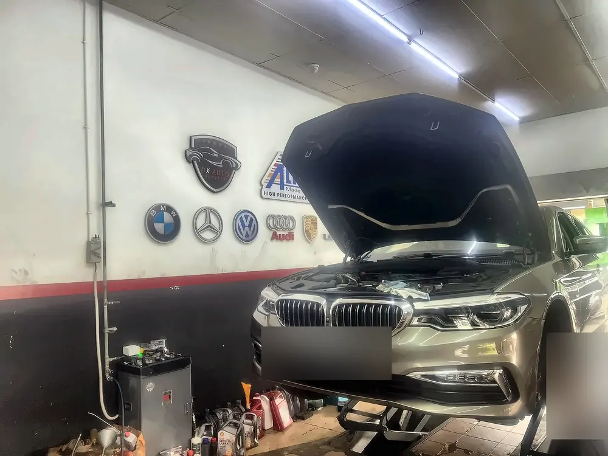

Brakes, suspension, tyres and alignment
Brakes, suspension, tyres and alignment
Brakes, suspension, tyres and alignment decide how safely your car stops and handles. We check all four and fix what needs it.
What this service covers
Brakes stop the car. Suspension keeps it stable and comfortable. Tyres are the only part touching the road, and alignment keeps them wearing evenly. In Johor, heavy rain, potholes and stop-and-go traffic wear these parts faster than you expect. Long trips on the Second Link and highways add to it. Catching a worn pad, a weak shock absorber or an uneven tyre early keeps repairs smaller and the car safer. We are at Taman Bukit Indah, near the Second Link, serving Iskandar Puteri and JB.
Signs you need this
- Squealing, grinding or scraping noise when you brake
- Brake pedal feels soft, low or vibrates when braking
- Steering wheel shakes or the car pulls to one side
- Car bounces, leans or clunks over bumps and humps
- Tyres wear unevenly or show cracks and bulges
- Steering wheel is off-centre when driving straight
What we do
Inspect the car
We check brake pads, discs and fluid, suspension parts, tyre condition and wheel alignment.
Explain what we found
We tell you what is worn, what is still safe and what can wait, in plain words.
Quote before work
You get a quote for each item. Nothing is repaired or replaced until you say yes.
Repair
We replace or fix the agreed parts, and set the alignment and tyre pressures where needed.
Test drive
We road test the car for braking, steering feel, noise and straight-line tracking.
Handover
We explain what was done and what to watch for as the new parts bed in.
What's included and what we check
- Brake pad and disc thickness
- Brake fluid level and condition
- Shock absorber leaks and wear
- Control arm and bush condition
- Tyre tread depth and age
- Tyre pressure and sidewall damage
- Wheel alignment readings
- Steering and ball joints
Makes seen in our bay
- BMW
- Kia
- Subaru
- Mini
- Land Rover
From photos of cars in our workshop. Named as text only, we are an independent workshop.
From our bay
Not sure what it is?
WhatsApp us what the car is doing. Price and time depend on the car, so WhatsApp us for a quote.
Questions drivers ask
Why do my brakes squeal?
Squealing can mean worn pads, dust, or glazed pads and discs. A grinding sound usually means the pads are finished and the discs are being damaged. Do not wait. We inspect the brakes and tell you what is needed. Brakes are a safety item, so do not delay.
How do I know if my tyres need changing?
Check for low tread, cracks, bulges or uneven wear. Old tyres can harden even with good tread. If the car pulls or vibrates, come in. We inspect the tyres and explain the condition before quoting. Rotating tyres and keeping pressure right also helps them last.
What does wheel alignment do?
It sets the wheels at the correct angles so the car drives straight and tyres wear evenly. A hard knock from a pothole or kerb can throw it off. We check it and tell you if it needs adjusting. Uneven tyre wear is a common sign of poor alignment.
Why does my steering wheel shake?
Common causes are unbalanced tyres, a bent wheel, worn suspension parts or warped brake discs. Where it shakes, such as at speed or when braking, helps us find it. We inspect the car first. Tell us if it happens at certain speeds.
How often should I check my brakes?
Have them checked at every service, and sooner if you hear noise or the pedal feels different. Heavy traffic wears pads faster. We check pad and disc thickness and tell you how much is left. Soft or long pedal travel also needs a check.
How much do brake pads or tyres cost?
It depends on your car and the parts it needs, so we do not list fixed prices here. WhatsApp 011-6776 1138 with your car model and we will give you a quote.
Other services
Where to find us
One workshop at 47 Jalan Indah 16/11, Taman Bukit Indah, near the Second Link, serving Iskandar Puteri and JB.